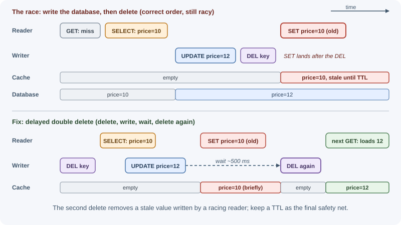
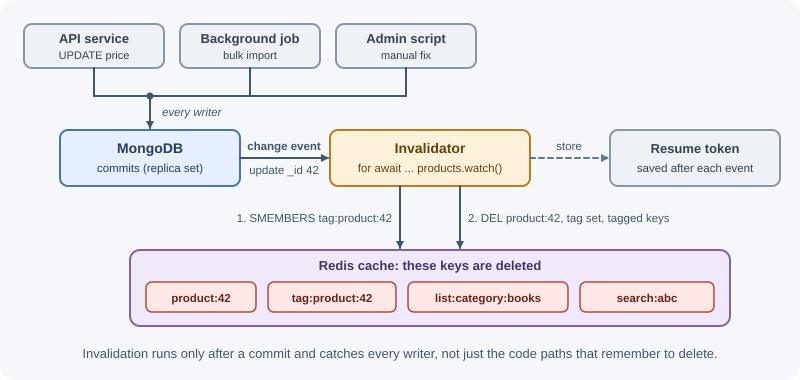

Cache Invalidation and Expiration¶
Cache invalidation is the work of removing or replacing cached data once it no longer matches the source of truth. Expiration is the automatic version: an entry is discarded after a time limit. Together they decide how stale cached data can be, and they are the hardest part of caching to get right.
Why it matters¶
A cache that is never invalidated eventually serves wrong data: an old price, a deleted product, a revoked permission. A cache that is invalidated too aggressively has a poor hit ratio and stops helping. Concurrency makes it worse: a write and a read happening at the same moment can leave an old value in the cache even when the code "deletes the key on every update". Understanding these failure modes lets you choose how much staleness each kind of data can tolerate and design accordingly.
Real-world usage¶
- Facebook: leases against stale sets. The Scaling Memcache at Facebook paper introduces leases to solve "stale sets" (a client writing an out-of-date value back into the cache because concurrent updates were reordered). On a miss, memcached gives the client a 64-bit token bound to the key; the client must present it when setting the value, and a delete for that key invalidates the token, so the late write is rejected.
- Facebook: invalidation from the commit log. The same paper describes
invalidation daemons (
mcsqueal) on every database that inspect the SQL statements the database commits, extract deletes, and broadcast them to memcache. That is event-driven invalidation driven by committed changes rather than by every code path. - Cloudflare cache tags. Cloudflare lets an origin add tags in a
Cache-Tagresponse header and then purge every cached file with a given tag at once. - Fastly surrogate keys. Fastly's
Surrogate-Keyheader "tags" content so that one key purge removes all related objects, the CDN version of tag-based invalidation.
Popular tools: MongoDB change streams, Debezium for change data capture from relational databases, and CDN tag or surrogate-key purging.
How it works¶
Why invalidation is hard¶
- The cache and the database are separate systems with no shared transaction, so they can be updated in different orders or one update can fail.
- Many app instances read and write at the same time.
- One database row can feed many cache entries (a product appears in its own entry, in category lists, and in search results).
- Local in-process caches exist on every instance, each needing its own invalidation.
Time-based expiration (TTL)¶
Absolute TTL expires an entry a fixed time after it was written, regardless of use. It bounds staleness: data is never older than the TTL.
SET product:42 {...} EX 300 # expires 300 s after being set
Sliding TTL resets the timer every time the entry is read. Frequently used entries stay cached, but a constantly read entry may never expire and can become very stale. Sliding expiration suits sessions ("log out after 30 minutes of inactivity") better than data copies.
// Sliding expiration in Redis: read and reset the TTL in one round trip
const session = await redis.getex(`session:${id}`, "EX", 1800);
Choose TTLs per data type from how stale it may be, not one global value.
Explicit invalidation on write¶
When the application changes data, it removes the cached copy so the next read loads fresh data.
Delete rather than update. Two writers updating the cache can finish in the wrong order:
Writer A: DB price=10 ............. cache SET price=10
Writer B: DB price=12 ── cache SET price=12
Final: DB=12, cache=10 (A's cache write arrived last)
Deleting the key avoids this: whichever delete runs last, the next read loads the committed value from the database.
Order: write the database, then delete the cache. Deleting first opens a window in which a reader repopulates the cache with the old value before the database write commits:
Delete-then-write (wrong order):
Writer: DEL key
Reader: miss -> read DB (old) -> SET key old
Writer: UPDATE DB new
Result: cache holds old value until TTL
The remaining race with write-then-delete¶
Even the correct order has a narrow race when a read miss overlaps a write:

It needs the reader's database read to start before the write and its cache write to land after the delete. It is rare but real at high traffic. Mitigations:
| Mitigation | Idea |
|---|---|
| Short TTL | Limits how long a stale value can survive |
| Delayed double delete | Delete, write the DB, wait a little (longer than a typical read), delete again |
| Versioned values | Store a version or updatedAt; never overwrite a newer cached version with an older one |
| Leases | The cache gives a token to the first reader after a miss; a delete invalidates the token so the late SET is rejected (used by large memcached deployments) |
| Event-driven invalidation | Delete after the database confirms the commit, via change events |
Delayed double delete¶
export async function updatePrice(productId, price) {
await redis.del(`product:${productId}`); // 1. first delete
await db.products.update(productId, { price }); // 2. write the DB
setTimeout(() => { // 3. delete again later
redis.del(`product:${productId}`).catch(() => {});
}, 500);
}
The second delete removes any stale value a concurrent reader wrote during the window. The delay must be longer than a typical read-and-populate. It reduces, but does not fully eliminate, the race, and the timer is lost if the process crashes, which is why a TTL is still needed.
Versioned keys and namespace bumping¶
Instead of deleting entries, change the key so old entries are simply never read again and expire on their own.
Per-entity version:
user:42:profile:v{version} version comes from the user row (updatedAt or a counter)
Namespace bumping (invalidate a whole group at once):
catalog:ns -> 17 (a counter in Redis)
catalog:17:product:1
catalog:17:category:books
INCR catalog:ns -> 18 (all catalog:17:* entries are now orphaned)
Namespace bumping invalidates thousands of keys with one command, without
scanning. Orphaned entries waste memory until their TTL expires, so they
must have one. A schema version in the key (:v2) also lets a deploy that
changes the cached data format start with fresh keys.
Event-driven invalidation¶
Instead of every code path remembering to delete keys, a separate process watches the database's change log and invalidates after each committed change.

- MongoDB change streams deliver insert, update, and delete events; see change streams.
- Change data capture (CDC) tools such as Debezium read the PostgreSQL write-ahead log or the MySQL binary log and publish changes to a message broker.
Benefits: invalidation happens only after commit, catches writes from every service and script, and keeps business code simpler. Costs: more moving parts and a small delay between commit and invalidation.
Tag-based invalidation¶
One change often affects many cached entries. Tags group keys so they can be invalidated together.
Cache entries Tag sets (Redis SETs)
page:/books/42 ─┐ tag:product:42 = { page:/books/42,
list:category:books ├── tagged list:category:books, search:abc }
search:abc ─┘
When product 42 changes, delete every key in tag:product:42, then the
tag set itself. CDNs offer the same idea as surrogate keys or cache tags
(see HTTP and CDN caching).
Stale-while-revalidate¶
Serve the stale value immediately and refresh it in the background. Users get fast responses; the next reader gets fresh data.
fresh period ┃ stale-but-usable period ┃ expired
0 ─────── 60 s ┃ 60 s ──────────── 300 s ┃ (must reload before answering)
serve ┃ serve stale + trigger ┃
┃ one background refresh ┃
HTTP supports it with Cache-Control: max-age=60, stale-while-revalidate=240.
Applications implement it by storing a "fresh until" time inside the value
and a longer TTL on the key.
Choosing acceptable staleness¶
| Data | Acceptable staleness | Approach |
|---|---|---|
| Static assets with hashed filenames | Forever (content never changes at that URL) | Long TTL, immutable |
| Blog post, product description | Minutes | TTL + delete on write |
| Product list, search results | Seconds to minutes | Short TTL, namespace bumping |
| Prices shown in a catalog | Seconds; recheck at checkout | Short TTL; checkout reads the DB |
| Permissions, revoked sessions | Near zero | Event-driven invalidation or no caching |
| Account balance, stock used to accept orders | None | Read the source of truth |
Ask: "What harm does a stale value cause, and for how long is that acceptable?" Then pick the TTL and invalidation method that fits.
When to use and when not to use¶
- TTL only: use when a known amount of staleness is fine and writes are frequent or come from systems you do not control. Avoid it when users must see their own changes immediately.
- Delete on write: use when your own code performs the writes. Avoid relying on it alone when other services or scripts also write.
- Versioned keys or namespace bumping: use to invalidate whole groups or to change the cached format on deploy. Avoid it without TTLs; orphaned keys then live forever.
- Event-driven invalidation: use when many writers touch the same data or invalidation must follow commits. Avoid it for small systems where the extra moving parts cost more than occasional staleness.
- Tags: use when one change affects many cached entries. Avoid huge tag sets that are themselves expensive to read and delete.
| Approach | Staleness | Complexity | Catches writes from other services | Best for |
|---|---|---|---|---|
| TTL only | Up to the TTL | Lowest | Yes (eventually) | Catalogs, public lists |
| Delete on write | Small race window | Low | No | Entities your app owns |
| Namespace bump | Until the bump | Low | No | Whole groups, deploys |
| Event-driven (CDC) | Commit + small lag | High | Yes | Shared data, many writers |
| Tags | Small race window | Medium | Only if tagged writes run it | Derived entries, CDN pages |
Practical examples¶
Never overwrite a newer cached version¶
// Store a version with the value; refuse to write an older one.
// Lua runs atomically inside Redis.
const SET_IF_NEWER = `
local current = redis.call("GET", KEYS[1])
if current then
local decoded = cjson.decode(current)
if decoded.version >= tonumber(ARGV[2]) then return 0 end
end
redis.call("SET", KEYS[1], ARGV[1], "EX", ARGV[3])
return 1
`;
export async function cacheProduct(product) {
// product.version increments on every database update
await redis.eval(SET_IF_NEWER, 1, `product:${product.id}`,
JSON.stringify(product), product.version, 300);
}
Event-driven invalidation with MongoDB change streams¶
import { MongoClient } from "mongodb";
import Redis from "ioredis";
const mongo = new MongoClient(process.env.MONGODB_URI);
const redis = new Redis(process.env.REDIS_URL);
await mongo.connect();
const products = mongo.db("shop").collection("products");
// Change streams require a replica set or sharded cluster
for await (const change of products.watch([], { fullDocument: "updateLookup" })) {
const id = change.documentKey._id.toString();
const tagKey = `tag:product:${id}`;
const keys = await redis.smembers(tagKey); // every entry that used this product
await redis.del(`product:${id}`, tagKey, ...keys);
}
A production invalidator also stores the stream's resume token so it can continue after a restart without missing changes.
Tagging entries when caching them¶
export async function cacheWithTags(key, value, ttlSeconds, tags) {
const tx = redis.multi();
tx.set(key, JSON.stringify(value), "EX", ttlSeconds);
for (const tag of tags) {
tx.sadd(`tag:${tag}`, key);
tx.expire(`tag:${tag}`, ttlSeconds * 2); // tag sets must not live forever
}
await tx.exec();
}
await cacheWithTags("list:category:books", books, 120, ["product:42", "product:43"]);
Best practices¶
- Give every cache entry a TTL as a safety net.
- Write the database first, then delete the cache entry.
- Delete cached entries rather than overwriting them on writes.
- Use namespace versions for groups of keys and schema versions for format changes.
- Prefer event-driven invalidation when many services or scripts write the same data.
- Set staleness budgets per data type and write them down.
- Read the source of truth for decisions that must be correct (payments, stock, authorization).
In production¶
- "I saved it, but I still see the old value." Detect: sampling shows cached values that differ from the database for recently updated rows, mostly under high traffic. Cause: the read/write race, or a delete that ran before the commit. Fix: write then delete, shorten the TTL, and add versioned writes or a delayed second delete.
- A deleted product still shows in category pages. Detect: the product's own key is gone, but list and search entries still contain it. Cause: derived entries were not invalidated. Fix: tag derived entries with the record's ID, or bump the list's namespace.
- Redis stalls while invalidating.
Detect: latency spikes for all clients, and
SLOWLOG GETshowsKEYScommands. Cause: pattern-based deletion withKEYSon a large keyspace. Fix: use tags or namespaces, or iterate withSCAN. - Access still works after it was revoked. Detect: audit logs show requests allowed after a role change. Cause: permissions cached with a long TTL. Fix: invalidate on permission change through events, and keep authorization caches very short-lived.
- Invalidations missed after the invalidator restarts. Detect: stale entries cluster around the invalidator's restart time. Cause: the change-stream consumer resumed from "now" instead of its last position. Fix: persist the resume token after each processed event and resume from it.
- Memory keeps rising after namespace bumps.
Detect:
used_memorygrows and many keys belong to old namespace versions. Cause: versioned keys without TTLs. Fix: always set TTLs on versioned keys.
Important terminology¶
- Invalidation: Removing or replacing cached data that may be stale.
- Absolute TTL: Expiry a fixed time after the entry was written.
- Sliding TTL: Expiry that resets on each access.
- Delayed double delete: Deleting a key before and shortly after a database write to remove values written by racing readers.
- Namespace bumping: Changing a version number embedded in keys to orphan a whole group of entries.
- Change data capture (CDC): Reading a database's change log to publish data changes as events.
- Stale-while-revalidate: Serving a stale value while refreshing it in the background.
Common mistakes and misconceptions¶
- Deleting the cache before writing the database.
- Updating cached values on write and suffering out-of-order overwrites.
- Forgetting derived entries (lists, search results) when one record changes.
- Using sliding TTLs for data copies, so hot entries never refresh.
- Using
KEYS pattern*to find entries to delete; it blocks Redis on large datasets. Use tags, namespaces, orSCAN. - Believing "delete on write" alone guarantees consistency.
- Caching authorization decisions for a long time, so revoked access keeps working.
Revision questions¶
- Why is "write the database, then delete the cache" better than the reverse order?
- Describe the race that can still leave a stale value after write-then-delete, and two ways to reduce it.
- When would you use a sliding TTL instead of an absolute one?
- How does namespace bumping invalidate many keys at once?
- What are the advantages of event-driven invalidation over invalidating in application code?
- How would you decide the staleness budget for product prices?